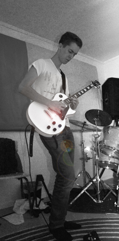
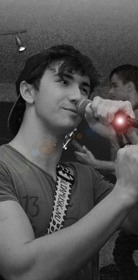
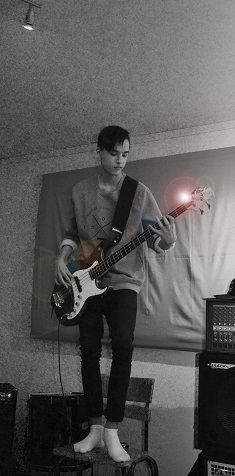
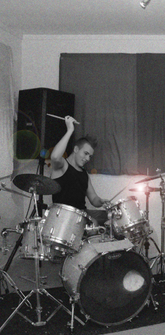

Medlemmar
Viktor Rosvall
Guitarist and basist. Inspirationer från amerikanska och brittiska rock- och metalband. Favoritbanden är Metallica, Avenged Sevenfold, Slipknot, Sum-41, Green Day, Bring me the Horizon and Muse.
På sin fritid spelar han spel och över gitarr. Har mycket erfarenhet av att spela på scen.
William "Norsken" Johansson
Självlärd trubadur och gitarrist med influenser av svenska artister som Håkan Hellström, Magnus Uggla och amerikanska band som Sum-41, Greenday, Blink-182 och The Offspring.Förutom musik så lever han för sina biceps.
Erik Helmersson
Basist med massor av riffs. Gillar nästan alla typer av musik. Erik lyckas alltid undvika kameror oavsett om han vill eller inte.På sin fritid sover han eller spelar spel. Ibland tar han basen och spelar några sjuka basriff och tar gladligen emot donationer i Doritos.
Kristoffer "Barka" Engström
Självlärd trummis och gillar alla typer av musik.På sin fritid tränar han på gym och spelar spel. Han har en stor mohawk vilket är allt som behövs.